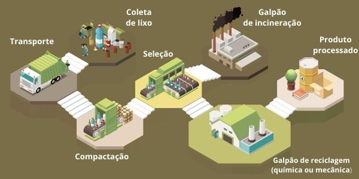

CLEAN
ENERGY
- O que é o Clean Energy?
É um projeto com o objetivo que todos tenha acesso à energia, principalmente energia limpa, além disso, as pessoas terão o conhecimento de outras fontes energia que não impactar a natureza como a hidrelétricas e podendo ter uma reeducação no descarte do lixo.
- Que tipo de energia será usada?
É uma energia de fonte renovável, contendo a característica de ser inesgotável, pois sua quantidade se renova constantemente ao serem usada. Nesse projeto será usada como fonte a energia de matéria orgânica (Biomassa).
- O que é Biomassa?
Massa biológica base da produção de energia a partir da decomposição de resíduos orgânicos. O conceito de biomassa se popularizou entre o século (XX-XXI), com o surgimento da preocupação em aprimorar técnicas de produção e exploração de fontes de energias renováveis, devido a evidente escassez dos recursos tradicionais, como o petróleo e o carvão mineral. A biomassa pode ser formada de substâncias de origem animal ou vegetal, como casca de frutas, esterco, madeira, restos de alimentos, resíduos agrícolas e florestais, entre outros materiais orgânicos.
- Como transforma em energia elétrica?
A incineração é a queima do lixo ou resíduo em fornos desenvolvidos especificamente para essa finalidade. Através dessa combustão, obtida a energia térmica, que pode ser transformada em energia elétrica. Ao incinerar os resíduos é gerado vapor, que no que lhe concerne, movimenta as pás ligadas a uma turbina. Com os movimentos giratórios das turbinas altera o fluxo do campo magnético dentro do gerador e, com a alternância no fluxo do campo magnético, é produzida a energia elétrica que podem ser utilizadas pelas indústrias, residências, etc.
- Quais as melhorias que a energia de biomassa oferece?
- Minimiza significativamente o problema dos lixões e aterro;
- As usinas podem ser instaladas próximas aos centros urbanos;
- Economiza em transporte já que pode ser construída próximos dos centros urbanos e industrias;
- Isso diminui as despesas com transporte a aterros que geralmente são bem distantes;
- É a alternativa recomendada pela ONU para a destinação do resíduo urbano;
- Reduz a emissão de gases dos aterros sanitários;

- Feedback
Comente a sua opinião sobre o site através do link: Formulário
- Jogo